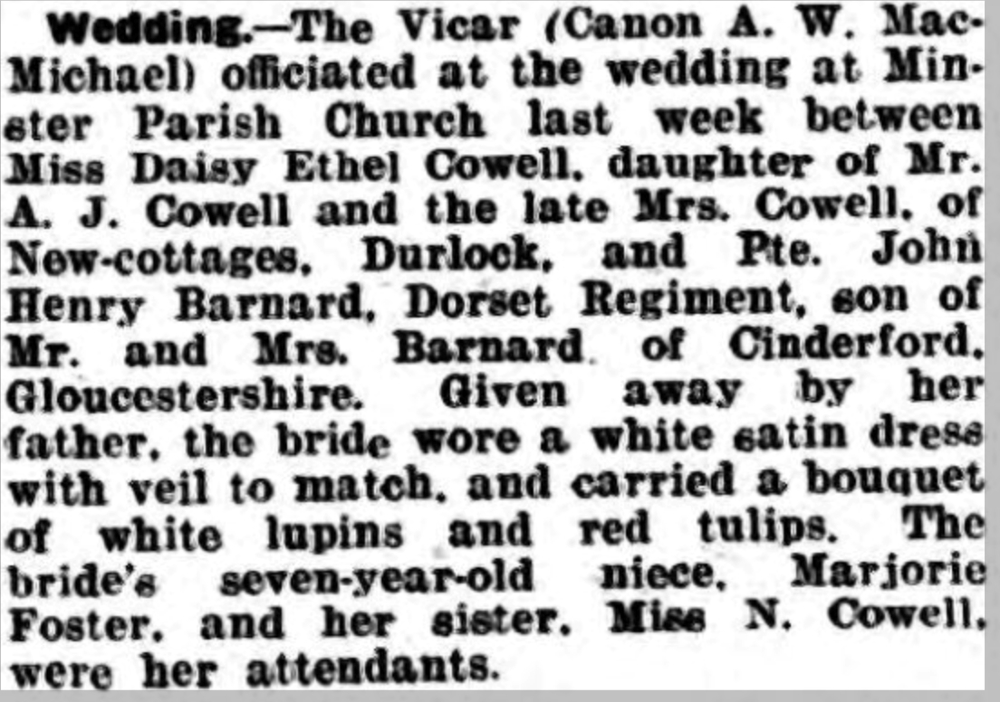
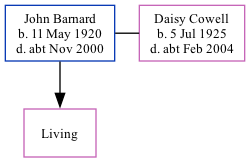

John Henry Barnard 1920 - c2000
[ Home ] | [ Calendar ] | [ Surnames Index ] | [ Family History ]John Barnard, the husband of Daisy Ethel Cowell (the first cousin once-removed on the mother's side of Nigel Horne), was born on May 11, 19201 and. He married Daisy (with whom he had 1 surviving child) in Minster, Thanet, Kent, England around May 19432.
He died c. Nov 2000 in Gloucester, Gloucestershire, England1.
Citations
- England & Wales deaths 1837-2007 - Findmypast
- England & Wales, Marriage Index: 1916-2005 Online publication - Provo, UT, USA: The Generations Network, Inc., 2009.Original data - General Register Office. England and Wales Civil Registration Indexes. London, England: General Register Office. © Crown copyright. Published by permission of the Cont
Media
Thanet Advertiser 25-5-1943

England & Wales marriages 1837-2008 - BMD/M/1943/2/AZ/000250/002
England & Wales marriages 1837-2008 - BMD/M/1943/2/AZ/000065/007
England & Wales deaths 1837-2007 - BMD/D/2000/11/83514025
Family Tree
Generated by Ged2Site. Last updated on Jul 20, 2025